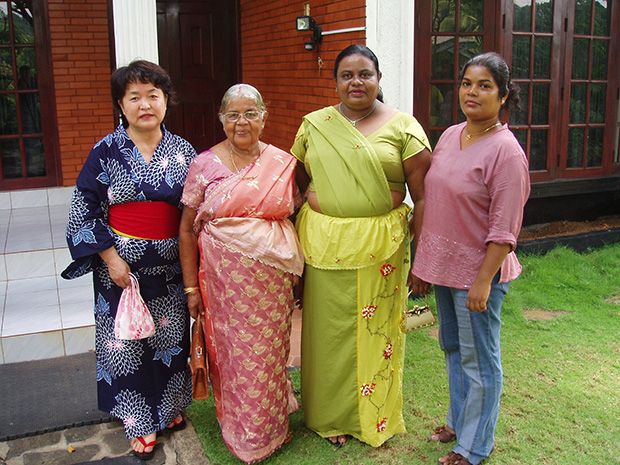
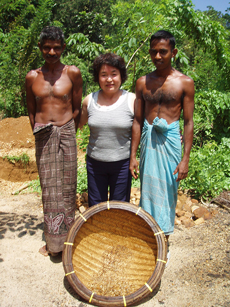
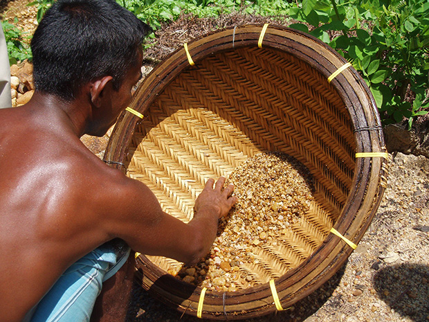

「料金が安いのと、一度行こうと思っていた地域なので参加を決めました。
期間が短かったので、ディスカッション中心の英語レッスンでした。
ホストファミリーは、７５歳の母親と、？歳（秘密！）の娘の２人家族でした。
娘さんはかなりおおざっぱな人で、面白かったです。
同じ敷地内の古い家に、（４人家族の）店子がいて、その家の子と隣の子供２人（男の子）が、朝早くから毎日入り浸りで、彼らの歓声が絶えませんでした。
彼らは何をしても怒らないRupaさんの大ファンなのです。
Fullｍoondayには、親戚のhomecoming partyがあったので、一緒に参加しました。
Formalを持って行ってなかったので、Manelさんから浴衣を借りました。
着物＝Formalというイメージがあるから、大丈夫だろうということで・・・。
また、RatnapraのGemMineにも行きました。
知り合いの実家はManelさん家よりももっと田舎の村でした。
低開発村視察は、５０年前にタイムスリップしたように、車の騒音も無く、道路は未舗装。
空気は美味しくて、身体に良い生活をしているなと思いました。


今度は涼しい時期に行こうかと思います。
コロンボに何日か滞在した後、留学プログラムに入ってもいいかと思います。
留学期間を少し減らして・・・・・。
今回は、田舎の村生活だったので、勉強には良い環境だったと思いますが、次は遊びの要素も少し取り入れてみようかと思います。
お世話になりました。
楽しかったです。」